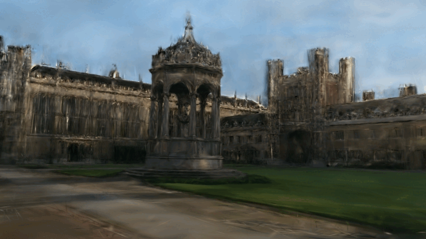
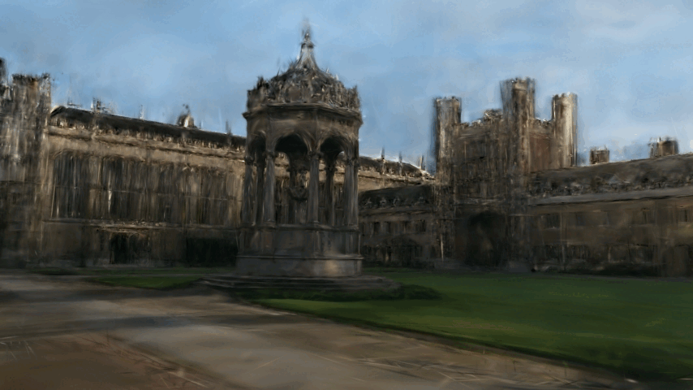
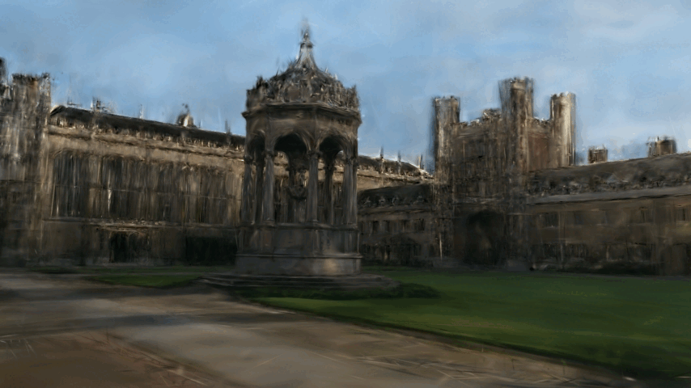

More Visualizations of Appearance-Varying 3DGS

 



Visual localization, which estimates a camera's pose within a known scene, is a fundamental capability for autonomous systems. While absolute pose regression (APR) methods have shown promise for efficient inference, they often struggle with generalization. Recent approaches attempt to address this through data augmentation with varied viewpoints, yet they overlook a critical factor: appearance diversity. In this work, we identify appearance variation as the key to robust localization. Specifically, we first lift real 2D images into 3D Gaussian Splats with varying appearance and deblurring ability, enabling the synthesis of diverse training data that varies not just in poses but also in environmental conditions such as lighting and weather. To fully unleash the potential of the appearance-diverse data, we build a two-branch joint training pipeline with an adversarial discriminator to bridge the syn-to-real gap. Extensive experiments demonstrate that our approach significantly outperforms state-of-the-art methods, reducing translation and rotation errors by 50% and 22% on indoor datasets, and 37% and 42% on outdoor datasets. Most notably, our method shows remarkable robustness in dynamic driving scenarios under varying weather conditions and in day-to-night scenarios, where previous APR methods fail.
Overall illustration of appearance-varying 3DGS. The framework models varying appearances using 3D Gaussians enhanced with appearance colors. It initializes 3D Gaussians from SfM data, refines their appearance by learnable sampling and blending weights computed via an encoder and MLP, and renders images by a differentiable rasterizer with edge refinement to minimize the rendering loss.
At test time, RAP's initial predicted pose will be used to render an RGB-D image via 3DGS. Together with MASt3R , we can obtain 2D-3D correspondences to perform RANSAC-PnP, resulting in a refined pose.

@inproceedings{Li2025unleashing,
title={Unleashing the Power of Data Synthesis},
author={Sihang Li and Siqi Tan and Bowen Chang and Jing Zhang and Chen Feng and Yiming Li},
year={2025},
booktitle={International Conference on Computer Vision (ICCV)}
}